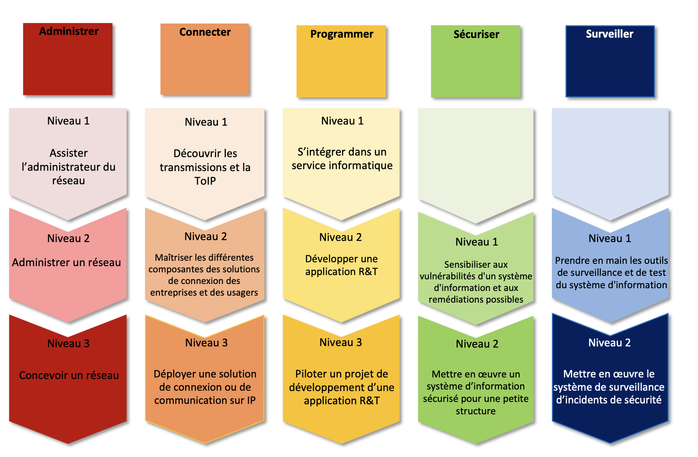
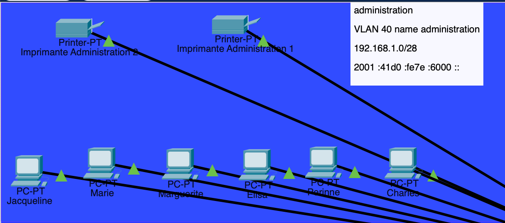
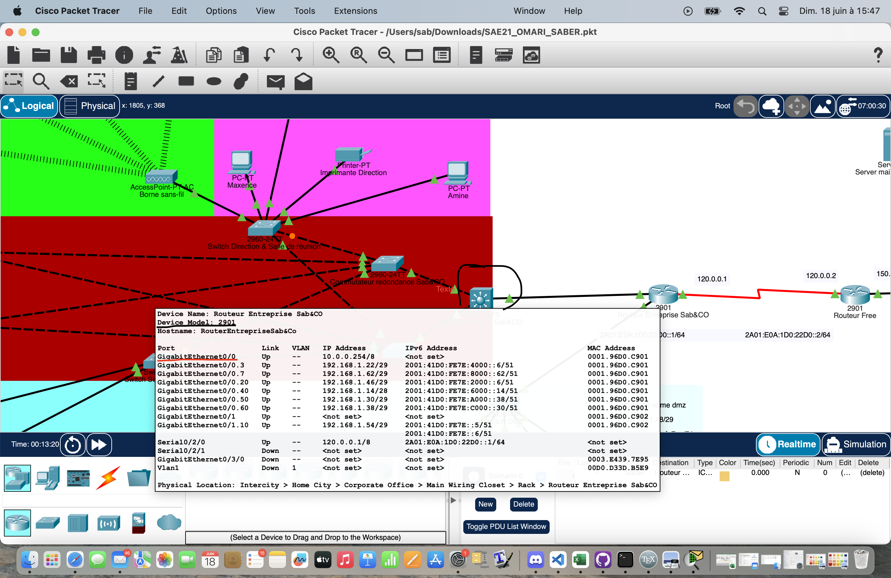

SAE21
Concevoir un réseau multisite

Présentation du Projet
Introduction
Ce projet s'inscrit dans le niveau 1 des attentes du BUT Réseaux et télécommunications que l'on peut voir ci-dessous :

J'ai pu donc lors de ce projet, mettre toutes les compétences que j'ai pu apprendre et acquérir tout au long de cette première année.
Notamment assister l'administrateur réseaux en créant des VLAN (permet la séparation de réseau pour éviter que les données se mélangent aux autres réseaux) et en octroyant des adresses IP à chaque machine.

Comme on peut le voir ici, j'ai crée une partie du réseau avec un vlan nommé administration avec comme adresse réseau 192.168.1.0.
Découvrir les transmissions et la TOIP en choisissant les meilleurs câbles/ports et equipements actifs (switch/routeur) pour avoir de meilleur débit lors de transmissions de données.

Ci-dessus, en entouré et sous-ligné ce sont les ports utilisés et modèles de switch/routeurs que j'ai utilisé pour garantir un débit plus que suffisant.
Ce fut une SAE très enrichissante qui nous a mis au défi concevoir un réseau avec toutes nos connaissances apprises tout au long de l'année.